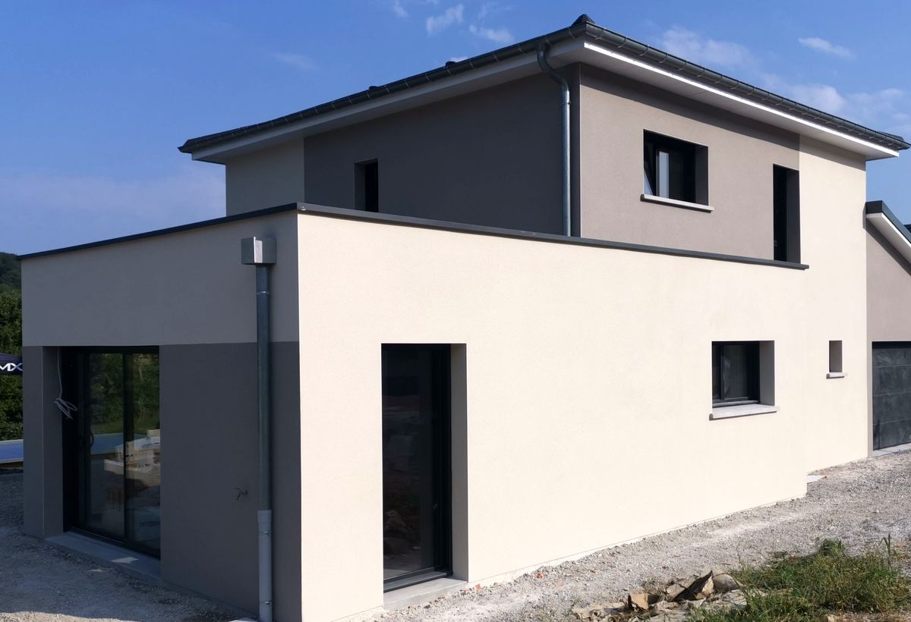

Service 01
Crépi
Apportez du caractère et une finition soignée à vos murs extérieurs avec notre expertise en crépi de haute qualité. Le crépi, ou enduit de façade, est une solution esthétique et protectrice pour vos murs. Nos artisans maîtrisent aussi bien les enduits monocouches que les enduits à la chaux, grattés, projetés ou taloché, pour un résultat adapté à l'architecture de votre maison.
Nous utilisons uniquement des produits certifiés, résistants aux intempéries et aux UV, pour une durabilité maximale sur le long terme.
Demander un devis